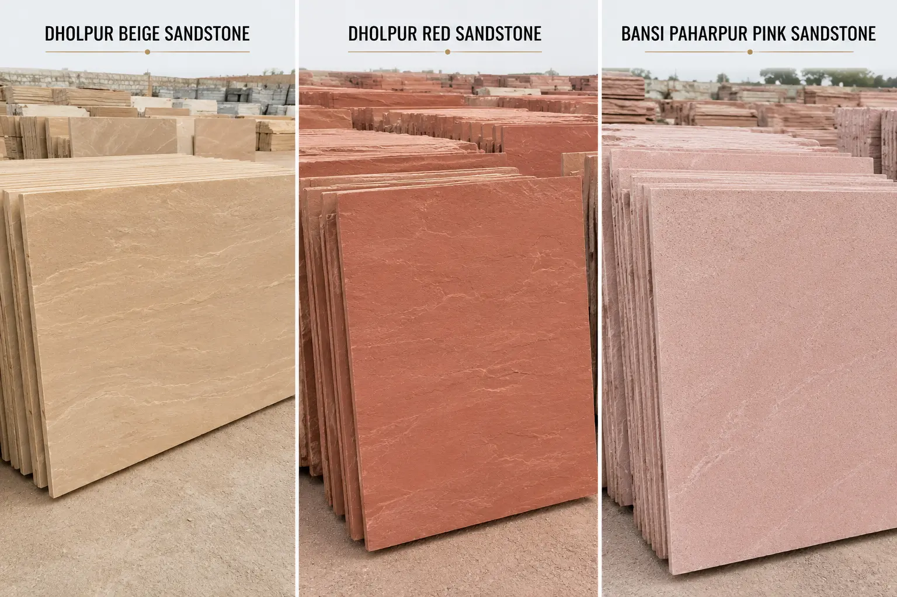
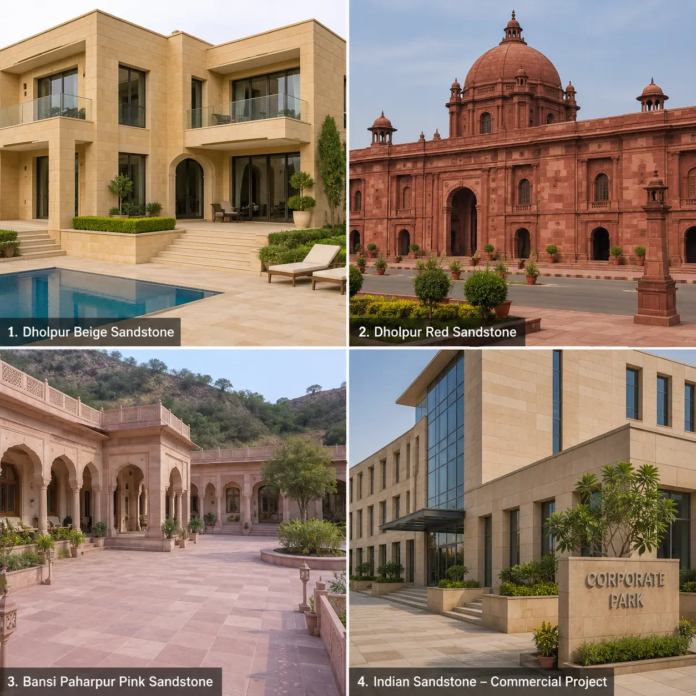
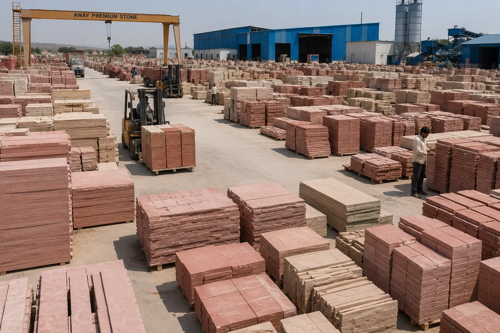
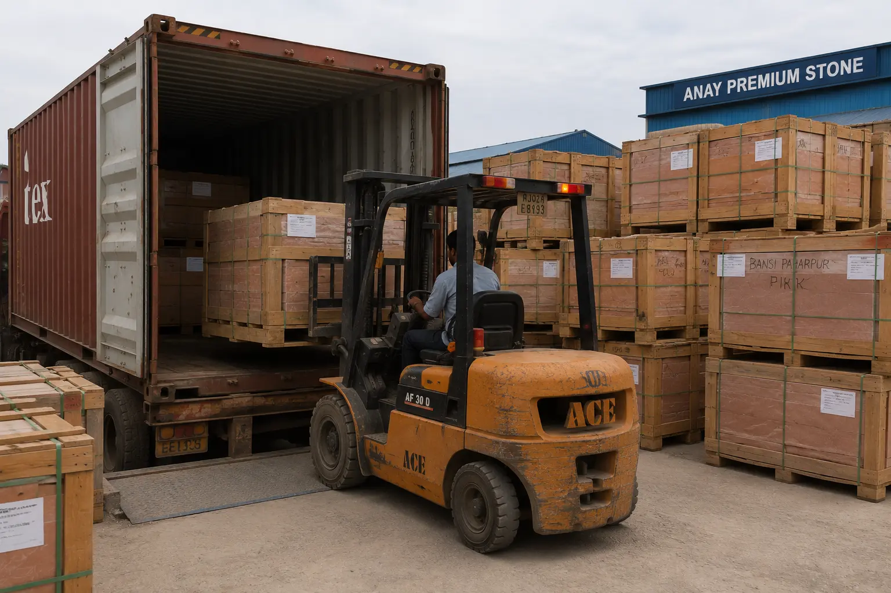

Sandstone Supplier India
ANAY Premium Stone is a trusted sandstone supplier in India supplying premium natural sandstone products for exporters, traders, wholesalers, architects, builders, distributors and project developers. We supply Dholpur Beige Sandstone, Dholpur Red Sandstone and Bansi Paharpur Pink Sandstone for residential, commercial, hospitality and landscape projects worldwide.
Request a Quote
Why Choose an Indian Sandstone Supplier?
India is internationally recognised as one of the world's leading sources of premium natural sandstone. Indian sandstone is valued for its durability, natural beauty, architectural versatility and availability in a wide range of colours and finishes. Architects, builders, landscape designers and procurement companies across the world continue to choose Indian sandstone for residential, commercial and public infrastructure projects.
As a leading sandstone supplier in India, ANAY Premium Stone provides dependable access to high-quality sandstone products suitable for domestic and international projects. Our supply capabilities support exporters, traders, wholesalers, distributors and project developers seeking reliable sandstone sourcing solutions.
We specialise in supplying premium sandstone products manufactured from Rajasthan's most respected sandstone varieties, including Dholpur Beige Sandstone, Dholpur Red Sandstone and Bansi Paharpur Pink Sandstone.
Learn more about ANAY Premium Stone and our premium sandstone supply capabilities across India and international markets.
- Premium Sandstone Supplier in India
- Bulk Sandstone Supply Capability
- Reliable Product Availability
- Export Grade Packaging
- Custom Project Supply Support
- International Supply Experience
Sandstone Products We Supply

ANAY Premium Stone supplies a carefully selected range of premium sandstone products suitable for residential, commercial, hospitality and landscape architecture projects. Our sandstone collections are known for their durability, consistent quality and architectural appeal.
We supply sandstone in slabs, tiles, paving stones, wall cladding, pool coping, steps, risers, kerbstones and custom-cut architectural components. Whether the requirement is a single project or ongoing procurement program, we provide reliable sandstone supply support.
Our Primary Sandstone Collections
- Dholpur Beige Sandstone
- Dholpur Red Sandstone
- Bansi Paharpur Pink Sandstone
- Sandstone Slabs
- Sandstone Tiles
- Sandstone Paving
- Wall Cladding Stone
- Pool Coping Stone
- Landscape Stone Products
- Custom Architectural Sandstone
These sandstone products are widely used by exporters, traders, wholesalers, builders, architects and procurement companies seeking dependable natural stone supply from India.
Dholpur Beige Sandstone

Dholpur Beige Sandstone is one of India's most popular natural stones for luxury residential, hospitality and landscape architecture projects. Its warm beige colour, fine-grained texture and elegant appearance make it a preferred choice for architects and designers worldwide.
As a trusted sandstone supplier in India, ANAY Premium Stone supplies Dholpur Beige Sandstone in slabs, tiles, paving stones, wall cladding, pool coping and custom architectural formats. The stone's natural beauty and durability make it suitable for both contemporary and traditional architectural styles.
Applications of Dholpur Beige Sandstone
- Luxury Villas
- Hotels and Resorts
- Pool Decks
- Courtyards
- Outdoor Living Areas
- Landscape Architecture
- Architectural Wall Cladding
- Premium Commercial Developments
Dholpur Beige Sandstone continues to be one of the most specified natural stones for projects requiring elegance, durability and timeless appeal.
Dholpur Red Sandstone

Dholpur Red Sandstone is renowned for its rich terracotta-red colour, architectural character and long-term durability. This sandstone has been used in monumental architecture, institutional buildings, commercial developments and public infrastructure projects across India and international markets.
ANAY Premium Stone supplies Dholpur Red Sandstone in multiple formats including slabs, paving, wall cladding, steps, risers and custom architectural elements. The stone's bold appearance and natural strength make it suitable for projects seeking a distinctive architectural identity.
Applications of Dholpur Red Sandstone
- Government Buildings
- Institutional Architecture
- Commercial Developments
- Public Infrastructure
- Architectural Facades
- Landscape Projects
- Monumental Entrances
- Luxury Estates
Dholpur Red Sandstone remains one of India's most respected natural building materials and is widely specified for projects requiring visual impact and durability.
Bansi Paharpur Pink Sandstone

Bansi Paharpur Pink Sandstone is internationally recognised for its soft pink colour, premium appearance and architectural elegance. Frequently used in luxury hospitality developments, heritage-inspired architecture and prestigious commercial projects, this sandstone is one of Rajasthan's most admired natural stones.
ANAY Premium Stone supplies Bansi Paharpur Pink Sandstone in slabs, paving, wall cladding, steps, columns and custom architectural formats tailored to project requirements.
Applications of Bansi Paharpur Pink Sandstone
- Luxury Hotels and Resorts
- Premium Residential Developments
- Religious and Cultural Projects
- Commercial Architecture
- Landscape Design
- Architectural Features
- Heritage-Style Developments
- Public Spaces
Its distinctive colour and refined appearance make Bansi Paharpur Pink Sandstone a preferred material for prestigious architectural projects.
Applications of Indian Sandstone

Indian sandstone is one of the most versatile natural building materials available today. Architects, builders, developers and landscape designers use sandstone for a wide variety of residential, commercial and public infrastructure projects.
The durability, aesthetic appeal and design flexibility of sandstone make it suitable for projects ranging from luxury residences to large-scale commercial developments.
Popular Sandstone Applications
- Luxury Villas and Residences
- Hotels and Hospitality Projects
- Commercial Buildings
- Corporate Campuses
- Public Infrastructure Projects
- Landscape Architecture
- Pool Decks and Courtyards
- Outdoor Living Spaces
- Architectural Wall Cladding
- Paving and Walkways
- Public Spaces and Urban Developments
- Institutional Buildings
The combination of strength, natural beauty and long-term performance continues to make sandstone one of the most preferred building materials worldwide.
Bulk Sandstone Supply Across India

ANAY Premium Stone supplies sandstone products in bulk quantities to exporters, traders, wholesalers, distributors, builders and procurement companies across India. Our supply capabilities support both project-based procurement and long-term sourcing programs.
Whether the requirement involves container quantities, commercial developments, landscape projects or distribution networks, our team provides dependable sandstone supply solutions backed by consistent quality and professional service.
Bulk Supply Solutions
- Bulk Sandstone Slabs
- Bulk Sandstone Tiles
- Bulk Paving Supply
- Wall Cladding Stone Supply
- Commercial Project Supply
- Landscape Project Supply
- Distribution and Wholesale Support
- Project-Specific Procurement Programs
Our objective is to provide reliable sandstone supply solutions that help customers maintain project schedules, inventory requirements and procurement efficiency.
Export Supply Capabilities

ANAY Premium Stone supports exporters, importers, distributors and procurement companies seeking dependable sandstone supply from India. Our sandstone products are supplied for projects across international markets including the UAE, UK, USA, Australia and Europe.
We understand the requirements of international buyers and provide professional support for product selection, quality control, packaging and logistics coordination.
Export Supply Advantages
- Export Grade Packaging
- Container Loading Support
- Bulk Supply Capability
- Consistent Product Quality
- Project-Specific Production
- International Supply Experience
- Reliable Documentation Support
- Long-Term Supply Partnerships
Our export supply system is designed to support both large-scale construction projects and ongoing procurement programs worldwide.
We regularly work with importers, distributors, construction companies and procurement teams seeking a dependable sandstone supplier from India for long-term supply partnerships.
Who We Serve
ANAY Premium Stone supplies sandstone products to a diverse range of businesses and professionals seeking dependable natural stone supply solutions.
- Exporters seeking reliable sandstone sourcing partners.
- Stone Traders requiring consistent product availability.
- Wholesalers and Distributors managing regional supply networks.
- Builders and Contractors sourcing materials for construction projects.
- Architects and Designers specifying premium sandstone for architectural developments.
- Landscape Contractors requiring paving and outdoor stone products.
- Procurement Companies managing large-scale project sourcing.
- International Importers seeking premium Indian sandstone products.
Why ANAY Premium Stone
ANAY Premium Stone is committed to supplying premium sandstone products backed by dependable service, consistent quality and long-term supply capabilities. Our focus on professionalism and customer satisfaction helps us support exporters, traders, wholesalers, builders and project developers worldwide.
- Premium Sandstone Supplier in India
- Specialists in Dholpur Beige, Dholpur Red and Bansi Paharpur Pink Sandstone
- Bulk Supply Capability
- Export Grade Packaging
- Project-Specific Supply Solutions
- Professional Customer Support
- Reliable Product Availability
- International Market Experience
- Long-Term Business Relationships
- Quality-Focused Operations
Our objective is to provide premium sandstone products and dependable supply solutions that help customers achieve successful project outcomes.
Frequently Asked Questions
Who is a sandstone supplier in India?
ANAY Premium Stone is a sandstone supplier in India supplying premium sandstone products for exporters, traders, wholesalers, builders and project developers.
What sandstone products do you supply?
We supply Dholpur Beige Sandstone, Dholpur Red Sandstone, Bansi Paharpur Pink Sandstone, sandstone slabs, tiles, paving, wall cladding and custom architectural products.
Do you supply sandstone in bulk quantities?
Yes. We support bulk sandstone supply requirements for exporters, wholesalers, distributors and project developers.
Do you export sandstone internationally?
Yes. We support international projects and export supply requirements across multiple global markets.
Can traders source sandstone directly from you?
Yes. Traders and distributors can source sandstone products directly from ANAY Premium Stone.
Do you provide export-grade packaging?
Yes. All products are packed using professional export-grade packaging methods suitable for international transportation.
Do you supply sandstone across India?
Yes. We supply sandstone products to exporters, traders, wholesalers, builders and procurement companies throughout India.
Which sandstone varieties do you specialise in?
We specialise in Dholpur Beige Sandstone, Dholpur Red Sandstone and Bansi Paharpur Pink Sandstone.
Do you support custom project requirements?
Yes. We provide custom supply solutions according to project specifications and procurement requirements.
Can you supply sandstone for large commercial projects?
Yes. ANAY Premium Stone supports large commercial developments, hospitality projects, public infrastructure works and long-term procurement programs requiring bulk sandstone supply.
How can I request a quotation?
You can contact ANAY Premium Stone with your project details, quantities and specifications to receive a quotation.
Explore Our Sandstone Collections and Supply Solutions
Request a Quote for Premium Indian Sandstone
Looking for Dholpur Beige Sandstone, Dholpur Red Sandstone or Bansi Paharpur Pink Sandstone? Contact ANAY Premium Stone for pricing, technical specifications, samples, bulk supply requirements and project support. We work with exporters, traders, wholesalers, builders, architects and procurement companies across India and international markets.
Request a Quote